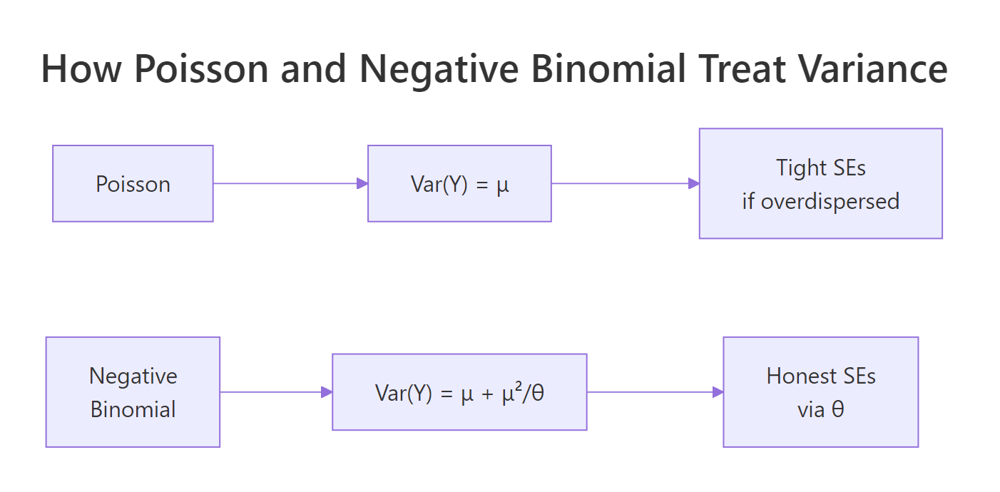
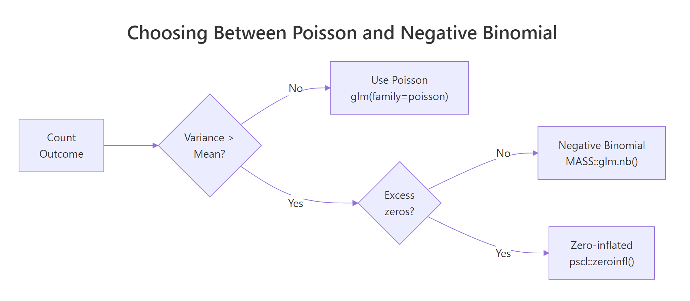

Negative Binomial Regression in R: MASS::glm.nb() & Overdispersion Fix
Negative binomial regression in R fits count outcomes whose variance exceeds their mean, a pattern Poisson regression silently mishandles. MASS::glm.nb() adds a dispersion parameter, theta, that lets the variance grow quadratically with the mean, giving honest standard errors, correct p-values, and trustworthy predicted intervals.
When should you pick negative binomial over Poisson?
The quick test is simple. If a count outcome's variance is noticeably larger than its mean, a plain Poisson GLM will give you artificially tight standard errors and understate uncertainty. Negative binomial regression fixes that by letting each observation carry extra variability on top of the Poisson mean. Let's simulate 200 overdispersed counts, fit both models, and watch the standard errors shift so you can see the difference before we dig into the machinery.
The sample variance is nearly four times the mean, so the Poisson assumption is broken. The coefficient estimates barely move between the two fits, but the standard errors almost double under the negative binomial model. Poisson claims a very precise estimate; negative binomial admits the truth. Any confidence interval or p-value from the Poisson fit here is too aggressive.

Figure 1: Poisson ties variance to the mean; negative binomial adds a theta-scaled quadratic term so variance can inflate without distorting the fitted mean.
Try it: Re-run the simulation with size = 20 instead of size = 2 (lighter overdispersion) and see how the two models' standard errors converge.
Click to reveal solution
Explanation: With larger size (higher theta), the negative binomial variance approaches the Poisson variance, so the two models agree on standard errors.
How do you detect overdispersion?
Before switching models, you want evidence. Two quick checks catch most cases: the ratio of squared Pearson residuals to residual degrees of freedom, and a visual comparison of variance against mean. The dispersion ratio should hover near 1 for a well-specified Poisson model; anything above roughly 1.5 is a red flag, and above 2 is a firm signal to switch.
A ratio of 3.1 means the Poisson residuals are over three times as variable as the model expects. That is the same overdispersion our simulation deliberately injected. The check adds one line of code and catches the problem before it corrupts downstream inference.
A complementary visual check bins the fitted mean and plots the in-bin variance. Under Poisson, the points should fall near the y = x line.
Variance runs far above mean in every bin. The gap grows as the mean grows, which is the classic fingerprint of negative binomial dispersion rather than simple Poisson noise.
Try it: Compute the dispersion ratio on nb_fit and confirm it drops close to 1.
Click to reveal solution
Explanation: The negative binomial fit absorbs the extra variance into theta, so the Pearson residuals now behave as expected under the model.
What does glm.nb() return, and how do you interpret theta?
The negative binomial summary looks almost identical to a Poisson GLM summary, with one extra number: theta. Theta is the dispersion parameter. Small theta means heavy overdispersion; as theta grows the model slides back toward Poisson. R reports it alongside its standard error at the bottom of the output.
The negative binomial uses the NB2 variance function:
$$\mathrm{Var}(Y) = \mu + \frac{\mu^2}{\theta}$$
Where:
- $\mu$ = the fitted mean (same as Poisson)
- $\theta$ = the dispersion parameter estimated from the data
- $\mu^2/\theta$ = the extra variability beyond Poisson
As $\theta \to \infty$, the second term vanishes and the variance collapses back to $\mu$, the Poisson case.
Theta is 1.74, close to the true value of 2 used in the simulation. The second line flips it to alpha, the parameterization used in Stata and SAS. You are talking about the same quantity; the software just reports its inverse.
With the log link, coefficients on the raw scale are log rate ratios. Exponentiating turns them into incidence rate ratios (IRRs), which read directly as multiplicative effects.
A one-unit increase in x multiplies the expected count by about 1.54, with a 95% confidence interval from 1.28 to 1.86. That is the sentence you want in a results paragraph: a concrete multiplier plus an honest interval.
Try it: Compute alpha (inverse of theta) directly from the fit and print it.
Click to reveal solution
Explanation: Stata and SAS parameterize the dispersion as alpha, which is simply 1 / theta in the MASS parameterization.
How do you handle exposure with offset()?
Counts usually scale with exposure: events per hour, accidents per mile, infections per person-year. An offset lets you model rates without dividing before fitting. You add offset(log(exposure)) to the formula and the coefficients stay on the log rate scale. Forgetting the log() is the most common mistake here.
The intercept is the baseline rate per hour; the IRR for x says each one-unit bump multiplies the per-hour rate by 1.35. Without the offset the interpretation would collapse to counts over the whole study window, which almost never matches the scientific question.
offset(hours) silently fits a completely different model, usually with absurdly inflated rates.Try it: Refit the same model without the offset and compare how the coefficient on x changes.
Click to reveal solution
Explanation: Without the offset, the model pretends every observation had identical exposure, which biases both the intercept and any predictor that happens to covary with hours.
How do you compare Poisson and negative binomial models?
Poisson is a special case of negative binomial where theta is infinite. That nesting lets you run a likelihood ratio test (LRT) directly. AIC gives a complementary view that also penalizes model complexity.
The test statistic is 216 on 1 degree of freedom with p-value essentially zero. Negative binomial fits significantly better than Poisson on this data. That matches the simulation, where we injected heavy overdispersion.
Delta-AIC is over 200 in favor of the negative binomial. Rule of thumb: differences above 10 are decisive. Here both LRT and AIC point the same way.
Try it: Compute delta-AIC between the two models and state which one wins.
Click to reveal solution
Explanation: A positive delta-AIC means the subtracted model (NB) has lower AIC and fits better. A gap of 214 is decisive.
Practice Exercises
These exercises build on the tutorial. Use distinct variable names (prefix with my_) so the WebR session state stays clean.
Exercise 1: Fit and diagnose on a new dataset
Simulate 300 warehouse injury counts per month with predictor workload. Check whether the data are overdispersed, fit the appropriate model, and report the IRR for workload.
Click to reveal solution
Explanation: The dispersion ratio flags overdispersion, so we switch to NB. Each one-unit increase in workload raises the expected injury count by about 65%.
Exercise 2: Add an exposure offset
Extend Exercise 1 by simulating my_hours_worked as a monthly exposure, refit with an offset, and report the IRR as rate-per-hour.
Click to reveal solution
Explanation: The intercept is the baseline injury rate per hour worked; workload multiplies that rate by about 1.5 per unit.
Exercise 3: Decide with LRT and AIC
Using Exercise 1 data, run the Poisson vs NB likelihood ratio test and report delta-AIC. Write one sentence stating which model you would publish and why.
Click to reveal solution
Explanation: Both LRT and AIC strongly prefer the negative binomial. Publish NB and report the overdispersion diagnostic so reviewers see why.
Complete Example
Let's walk through a full analysis in one narrative. A retail chain tracks monthly customer complaints per store. Analysts think workload_index drives complaints, but stores open different numbers of hours. We want a rate-based model with honest uncertainty.
The dispersion ratio of 3.1 under Poisson rules out that model. The negative binomial IRR for workload is 1.45 per unit (CI 1.30 to 1.62), meaning a one-standard-deviation jump in workload raises the complaint rate by about 45%. A typical high-workload store open 400 hours is expected to generate about 10 complaints per month.
Summary

Figure 2: A two-question flow picks the right count model: first check dispersion, then check for excess zeros.
| Question | Tool in R | Typical signal |
|---|---|---|
| Do I need NB? | sum(resid(fit, "pearson")^2) / df.residual(fit) |
Ratio > 1.5 |
| How do I fit it? | MASS::glm.nb(y ~ x, data = d) |
Returns coefs + theta |
| What is theta? | fit$theta |
Smaller = more overdispersion |
| How do I interpret? | exp(coef(fit)) |
Incidence rate ratios |
| How do I handle exposure? | + offset(log(exposure)) |
Rates per unit exposure |
| Is NB better than Poisson? | pchisq() LRT or AIC() |
NB wins when overdispersed |
References
- Venables, W. N. & Ripley, B. D. Modern Applied Statistics with S, 4th Edition. Springer, Chapter 7. Link
- MASS package,
glm.nbreference manual. Link - UCLA OARC, Negative Binomial Regression: R Data Analysis Examples. Link
- UVA Library, Getting Started with Negative Binomial Regression Modeling. Link
- Hilbe, J. M. Negative Binomial Regression, 2nd Edition. Cambridge University Press (2011).
- Cameron, A. C. & Trivedi, P. K. Regression Analysis of Count Data, 2nd Edition. Cambridge University Press (2013).
- Rodriguez, G. Models for Over-Dispersed Count Data (Princeton GLM notes). Link
Continue Learning
- Poisson Regression in R, the baseline count model that negative binomial extends. Start here for the log link and IRR mechanics.
- Added Variable Plots in R, diagnostic plots that help you check linearity of each predictor after fitting.
- Regression Diagnostics in R, general checks for influential points and residual structure that apply to GLMs too.